J2ME – Java on the Mobile
Phone
Before you start running
your first Java program on your mobile device, we assume that you have java
installed on your PC and you have downloaded J2ME from the sun site and
installed it on your harddisk.
We then click on Start,
Programs and then on J2ME Wireless Toolkit 2.0 Beta 2, followed by the icon
KToolBar. This will execute a program ktoolbar.exe from the folder
C:\WTK20\bin\. The executable is a program that will execute the compiled Java
programs. The J2ME software, by default, gets installed in the WTK20 folder
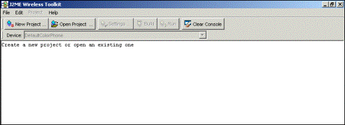
To create a project,
click on the big button New Project. A dialog box comes up with two questions,
the first being the name of the project, we call it vijay and then the name of
the Midlet class, in our case it will be zzz.
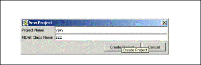
A Midlet is nothing but a
Java program running on a mobile handset. Click on the OK button, which then
leads on to another dialog box. Click on the OK button here and it will show
some useful messages on the screen.
The first one reports the
fact that the Java source files have been placed in the directory
c:\WTK20\apps\vijay\src. Thus, every project has its own sub directory under
the apps directory.
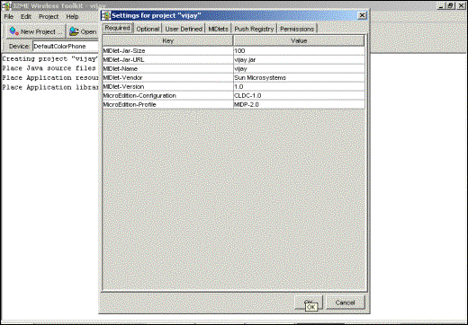
Off we proceed to this
directory and to our surprise, though there is a directory created but there
are no existing files within.
Create a text file called
zzz.java using any word processor. The J2ME toolkit does not come with an
environment to enable us to write code, hence we have to resort to our own word
processor.
zzz.java
public class zzz
{
}
Save the file and then go
back to the program KtoolBar. Here click on the button Build, which results in
no errors. Now click on run. The outcome is that some mobile phone is seen with
the name of our project vijay.
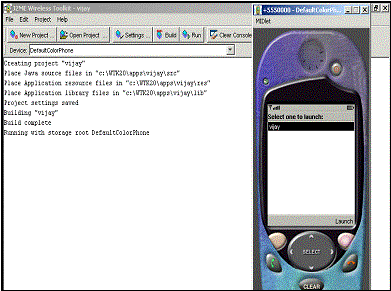
Thereafter,
click on the soft button below the words Launch on the handset on the right
hand side. This gives an error ‘Class not a Midlet’. On closing the handset,
when we move back to KtoolBar, the same error is seen.
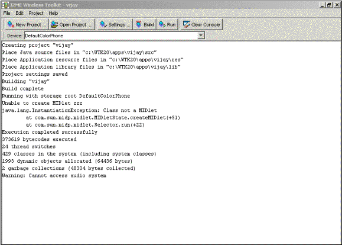
As mentioned earlier, a
Midlet is nothing but a Java class but it is derived from the class MIDlet.
Class zzz is a stand-alone class which must be derived from the MIDlet class.
Now add the following
code to zzz.java.
zzz.java
import
javax.microedition.midlet.*;
public class zzz extends
MIDlet
{
}
The class MIDlet comes
from the package javax thus denoting that the package is not part of the
standard java packages, which usually start with java. Then microedition is
indicative of the fact that the package deals with the mobile world and finally
comes midlet.
Building or compiling the
above program again gives an error now stating that the class MIDlet is an
abstract class.
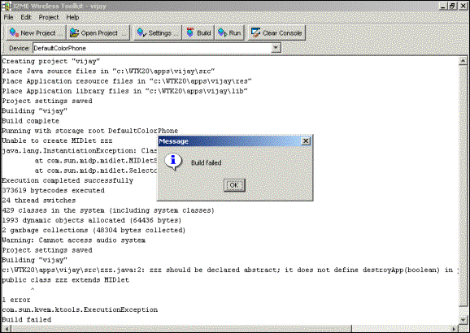
For those who arrived
late to the party, an abstract class is an incomplete class thus it cannot be
used in its own form. There is at least one function in this class marked
abstract and it does not have a function body. Unless the code for the
incomplete functions are not specified in the derived class, the class remains
unusable.
On reading the
documentation, we discovered the functions that required code and have inserted
the same in the java file.
zzz.java
import
javax.microedition.midlet.*;
public class zzz extends
MIDlet
{
public void
destroyApp(boolean unconditional)
{
System.out.println("destroyApp");
}
public void startApp()
{
System.out.println("startApp");
}
public void pauseApp()
{
System.out.println("pauseApp");
}
}
Finally, build the class
zzz and it generates no errors. This also is conclusive of the fact that the
class MIDlet has 3 abstract functions, startApp, pauseApp and destroyApp. The
println function is used to notify when the above functions get called.
The above program when
launched also does not show any errors but no significant output is witnessed
on the mobile screen. However, the
KtoolBar console displays startApp. This could possibly happen only if the
first method to be called from our MIDlet is startApp. Also, when the mobile
handset is closed, the method destroyApp is seen being called.
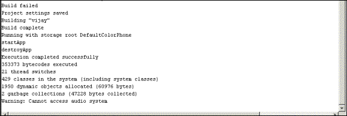
zzz.java
import
javax.microedition.lcdui.*;
import
javax.microedition.midlet.*;
public class zzz extends
MIDlet
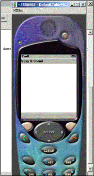{
Form mForm;
public void
destroyApp(boolean unconditional)
{
System.out.println("destroyApp");
}
public void startApp()
{
System.out.println("startApp");
mForm = new
Form("Vijay & Sonal");
Display mDisplay;
mDisplay =
Display.getDisplay(this);
mDisplay.setCurrent(mForm);
}
public void pauseApp()
{
System.out.println("pauseApp");
}
}
The above example
sincerely changes the title of the form to Vijay & Sonal.
Lets us unravel this
secret now. In the above program, mForm is an instance variable of the class
Form. The Form class is always used when interacting with the user and an
instance variable is used so that others functions too can use this variable.
All initialization or one time code is placed in the method startApp. The text
given to the constructor when creating a new Form object gets displayed as the
title of the form. Thus the handset shows Vijay & Sonal.
In the J2ME world, the
display is the highest object that is to be worked with. The static function
getDisplay from the Display class returns the current display. Then the
setCurrent method is used from the Display object to set the form to mForm,
i.e. superseding the default form with the user-created form. The Form and Display class belong to the
package lcdui.
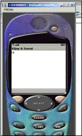
The next program is a
midlet that interacts with the user.
zzz.java
public void startApp()
{
System.out.println("startApp");
mForm = new
Form("Vijay & Sonal");
mForm.append("Hi");
Display mDisplay;
mDisplay = Display.getDisplay(this);
mDisplay.setCurrent(mForm);
}
The method startApp is
the only function put up for display since most of the code remains the same.
As before, a new Form called mForm is created . The method append from the Form
class is put to use to adds a string to the displayed form. That’s it. It’s that easy to emit out things on the
handset !!!
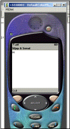
zzz.java
public void startApp()
{
Command mCommand;
System.out.println("startApp");
mForm = new
Form("Vijay & Sonal");
mForm.append("Hi");
mCommand = new
Command("Quit", Command.EXIT, 0);
mForm.addCommand(mCommand);
Display mDisplay;
mDisplay =
Display.getDisplay(this);
mDisplay.setCurrent(mForm);
}
The next task on the
agenda is to create a soft button on the mobile handset like the Launch soft key.
For this reason, the class Command is used since it enables creating such soft
keys.
The constructor is given
three parameters.
The first is the text the
user should see, and in our case the
string is Quit.
The second parameter is
the intent of the soft key. J2ME has 8 predefined types BACK, CANCEL, EXIT,
HELP, ITEM, OK, SCREEN, and STOP. This is more of a guide to the user interface
of the mobile so that it can handle the Back soft key in its own way that the
user is familiar with.
The last is a priority
where 1 denotes highest priority. The basic intention behind this option is
that if the handset can display only 2 soft keys whereas the code has 4, then
only the higher priority gets displayed.
Finally, the Form object
mForm’s method addCommand is used to add this button to the form.
zzz.java
import
javax.microedition.lcdui.*;
import
javax.microedition.midlet.*;
public class zzz extends
MIDlet implements CommandListener
{
Form mForm;
Command mCommandQuit;
Command mCommandItem;
public void startApp()
{
System.out.println("startApp");
mForm = new
Form("Vijay & Sonal");
mForm.append("Hi");
mCommandQuit = new
Command("Quit", Command.EXIT, 0);
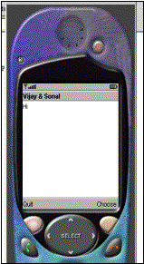mCommandItem
= new Command("Choose", Command.ITEM, 0);
mForm.addCommand(mCommandQuit);
mForm.addCommand(mCommandItem);
Display mDisplay;
mDisplay =
Display.getDisplay(this);
mDisplay.setCurrent(mForm);
mForm.setCommandListener(this);
}
public void
destroyApp(boolean unconditional)
{
System.out.println("destroyApp");
}
public void pauseApp()
{
System.out.println("pauseApp");
}
public void
commandAction(Command c, Displayable s)
{
System.out.println("commandAction");
notifyDestroyed();
}
}
The above example has two
buttons Quit and Choose that come at the bottom of the screen.
In the program, class zzz
implements the interface CommandListener. This interface has only one method
commandAction. Each time any of the soft keys is clicked on, this method gets
called.
The method
setCommandListener is passed the parameter ‘this’ to specify that the current
class contains the commandAction method. Finally, the println method reconfirms
that the two soft keys call upon this method.
The method
notifyDestroyed gets called whenever we exit from the handset.
zzz.java
public void
commandAction(Command c, Displayable s)
{
System.out.println("commandAction");
if ( c == mCommandQuit)
notifyDestroyed();
if ( c == mCommandItem)
mForm.append("Bye");
}
The above example
deciphers the soft key chosen by the user. The first parameter is a Command
object that decides on the soft key that was chosen. The action to be taken up
depends upon the programmer which he can safely enclose within the if
statements.
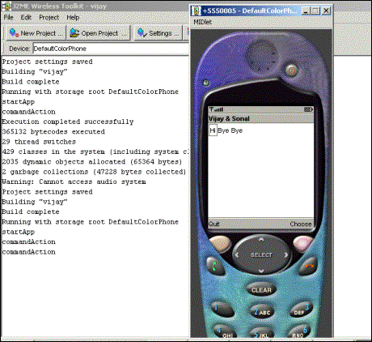
zzz.java
import
javax.microedition.lcdui.*;
import
javax.microedition.midlet.*;
public class zzz extends
MIDlet implements CommandListener
{
Form mForm;
Command mCommandQuit;
Command mCommandItem;
TextField mTextField;
public void startApp()
{
System.out.println("startApp");
mForm = new
Form("Vijay & Sonal");
mCommandItem = new
Command("Choose", Command.ITEM, 0);
mForm.addCommand(mCommandItem);
mTextField = new
TextField(null, "Vijay Mukhi", 100, TextField.ANY);
mForm.append(mTextField);
Display mDisplay;
mDisplay =
Display.getDisplay(this);
mDisplay.setCurrent(mForm);
mForm.setCommandListener(this);
}
public void destroyApp(boolean
unconditional)
{
System.out.println("destroyApp");
}
public void pauseApp()
{
System.out.println("pauseApp");
}
public void
commandAction(Command c, Displayable s)
{
System.out.println("commandAction");
String mstring =
mTextField.getString();
mForm.append(mstring);
}
}
This example delves
further on the interactivity issues where the user can now enter some text in a
textbox.
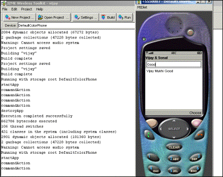
The class TextField takes
4 parameters. The first is the label a string and the second is also a string,
the initial string the user will see. Thus running the midlet shows vijay
Mukhi. The third is the maximum number of characters that can be entered in the
text box and the last is the constraints that can be imposes on the date
entered by the user. An entire volume can be written on the constraints that
can be applied to the input which can range from simple things like checking
for numbers to complex checks like phone numbers.
The Form class is then
used to add or append the TextField to the Form and then a Command object is
added to the form.
On executing the program
at first, the string vijay Mukhi is seen in the text field. Then we can make
the changes we want in the handset and then choose the soft button.
This calls the method
commandAction which in turn uses the getString method of the TextField to
retrieve the string the user keyed in. This string is then added to the form so
that the TextField now display the string keyed in by the user.
zzz.java
import
javax.microedition.midlet.*;
import javax.microedition.lcdui.*;
public class zzz extends
MIDlet implements ItemStateListener, CommandListener
{
Display mDisplay;
Form mForm;
Command mCommand;
ChoiceGroup mChoiceGroup;
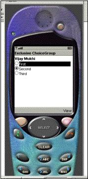public
void startApp()
{
mDisplay =
Display.getDisplay(this);
mChoiceGroup = new ChoiceGroup("Vijay
Mukhi", Choice.EXCLUSIVE);
mChoiceGroup.append("First",
null);
mChoiceGroup.append("Second",
null);
mChoiceGroup.append("Third",
null);
mChoiceGroup.setSelectedIndex(1,
true);
mCommand = new
Command("View", Command.SCREEN,2);
mForm = new Form("Exclusive
ChoiceGroup");
mForm.append(mChoiceGroup);
mForm.addCommand(mCommand);
mForm.setCommandListener(this);
mForm.setItemStateListener(this);
mDisplay.setCurrent(mForm);
}
public void
commandAction(Command c, Displayable s)
{
int i = mChoiceGroup.getSelectedIndex();
String ss =
mChoiceGroup.getString(i);
System.out.println("You
selected: " + ss);
}
public void
itemStateChanged(Item item)
{
System.out.println("Inside
itemStateChangeds()");
}
public void
destroyApp(boolean unconditional)
{
System.out.println("destroyApp");
}
public void pauseApp()
{
System.out.println("pauseApp");
}
}
The above program
displays a list of radio buttons with the second option being shown selected.
To display radio buttons
on the screen, the ChoiceGroup class is used.
The constructor is given the
heading of the radio buttons as the first parameter and the second parameter
restricts the choice to only one option at a time. There are multiple other
options where multiple options can be selected. Then three options are added to
the choice group using the append method.
This method takes two
parameters, the first is a string and the second is an image, if supported. The
selected radio button is then set using the setSelectedIndex method.
In computer programming,
the count always starts at 0 and not 1. The second parameter is set to true and
hence the radio button option is shown selected , false deselects it. Then a
command and a form object are created. The command and ChoiceGroup are then
added to the Form object using the same append method. The Forms append method
requires an Item object, and all UI widgets are derived from the Item class.
Then two listeners, the
CommandListener and the ItemListener are added.
The class zzz also
implements the ItemStateListener. This listener has only one method called
itemStateChanged.
The setItemListener
method in the Form class is used to call the above method each time the state
of the Choice Groups items is changed. The change can be brought about by using
the big arrow keys on the mobile phone . The Select button can then finally be
used to select the final item.
This act of ours calls
the method itemStateChanged. The soft button View shows the Choice Group
selected. The Choice Group has a method getSelectedIndex that returns the index
of the selected item. This number when given to the getString method returns
the string of the selected item.
mChoiceGroup = new
ChoiceGroup("Vijay Mukhi", Choice.MULTIPLE);
In the next example, make
two changes as shown above. Firstly, change the second parameter of the
ChoiceGroup constructor to MULTIPLE from exclusive. This results in check boxes
being displayed instead of radio buttons.
public void
commandAction(Command c, Displayable s)
{
boolean selected[] = new
boolean[mChoiceGroup.size()];
mChoiceGroup.getSelectedFlags(selected);
for (int i = 0; i <
mChoiceGroup.size(); i++)
System.out.println(mChoiceGroup.getString(i)
+ (selected[i] ? ": selected" : ": not selected"));
}
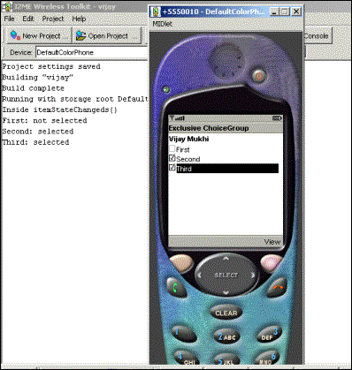
Now that multiple options
can be selected, the following changes are recommended in the commandAction
method.
The size method of the
ChoiceGroup gives a count on the choices or items present in the Choice Group.
So in the program, we create an array of boolean using this number, which in
our case is three.
The getSelectedFlags
method either return true or false. This function is put to use to fill up this
boolean array. We then use a for loop
to display the text of the choice item like before and the selected
array to display selected or not selected depending upon every individual
member.
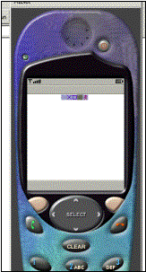
public void startApp()
{
mForm = new
Form("");
mDisplay =
Display.getDisplay(this);
try
{
Image im =
Image.createImage("/Theme-1.png");
mForm.append(new
ImageItem(null, im, ImageItem.LAYOUT_CENTER , null));
mDisplay.setCurrent(mForm);
}
catch
(java.io.IOException e)
{
System.err.println("Unable
to locate or read .png file");
}
}
This example comes as a
relief from the earlier ones. It simply displays an image on the handset. This
image is a png file, which is situated in the res directory under vijay.
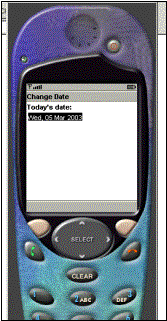The
Image class has a static method createImage that is passed the image file name.
Then the ImageItem class is used to specify other parameters like the layout
and then this ImageItem object is added to the form.
zzz.java
import
javax.microedition.midlet.*;
import
javax.microedition.lcdui.*;
import java.util.*;
public class zzz extends
MIDlet
{
Display mDisplay;
public void destroyApp
(boolean unconditional){}
public void pauseApp ()
{}
public void startApp ()
{
mDisplay =
mDisplay.getDisplay(this);
Form mForm = new
Form("Change Date");
java.util.Date now = new
java.util.Date();
DateField dateItem = new
DateField("Today's date:", DateField.DATE);
dateItem.setDate(now);
mForm.append(dateItem);
mDisplay.setCurrent(mForm);
}
}
The outcome of the above
program simply displays today’s date, This happens due to the DateField object
created in the program. This object is created by specifying some text that is
to be used as a label. The second parameter is the mode that is a Date and not
time.
The date is set to todays
date using the Date class from the java.util namespace. The setDate method from
the DateItem class performs this task for us. Once again, this object is added
to the form.
Thus on clicking the
Select button, a calendar gets displayed. Change the month or year to what
suits you and then click on the soft button save. After clicking on save the
date changes. Bear in mind that we have not written any code for any of this to
happen.
zzz.java
import javax.microedition.midlet.*;
import
javax.microedition.lcdui.*;
public class zzz extends
MIDlet
{
Display mDisplay;
public void destroyApp
(boolean unconditional){}
public void pauseApp ()
{}
public void startApp ()
{
mDisplay =
Display.getDisplay(this);
yyy canvas = new yyy();
mDisplay.setCurrent(canvas);
}
};
class yyy extends Canvas
{
public void
paint(Graphics g)
{
}
protected void
keyPressed(int keyCode)
{
if (keyCode > 0)
System.out.println("keyPressed
" + ((char)keyCode));
else
System.out.println("keyPressed
action " + getGameAction(keyCode));
}
};
This example enlightens
the user on the key s/he has pressed.
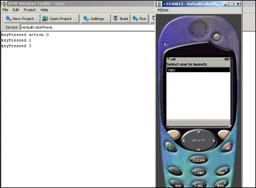
In place of the Form
class that has been used extensively earlier on, we now use a Canvas object.
This object gives access to the low level events and graphics.
The class yyy extends the
Canvas class and the setCurrent method uses this object. The canvas class has a
method paint that gets called whenever the screen is to be redrawn, similar to
an applet.
The keyPressed method
gets called whenever any key is pressed. If we press the first three keys, we
see 1 2 and 3. But when we press the right arrow, the keycode is less than zero
and the getGameAction is 5. This thus helps in figuring out the key that has
been pressed.
zzz.java
import java.io.*;
import
javax.microedition.io.*;
import
javax.microedition.lcdui.*;
import
javax.microedition.midlet.*;
public class zzz extends
MIDlet
{
Display mDisplay;
public void startApp()
{
mDisplay =
Display.getDisplay(this);
try
{
StreamConnection c =
null;
InputStream s = null;
StringBuffer b = new
StringBuffer();
TextBox t = null;
c =
(StreamConnection)Connector.open("http://localhost/a.txt");
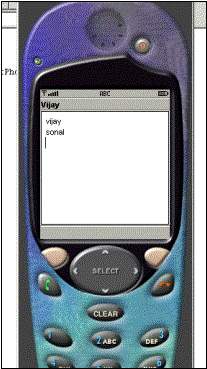s
= c.openInputStream();
int ch;
while((ch = s.read()) !=
-1)
{
b.append((char) ch);
}
t = new
TextBox("Vijay", b.toString(), 1024, 0);
mDisplay.setCurrent(t);
}
catch (IOException e)
{
System.out.println("IOException
" + e);
}
}
public void pauseApp() {}
public void
destroyApp(boolean unconditional) {}
}
a.txt
vijay
sonal
The objective of this
last example is to retrieve some data off a web site.
The display object is
always thereas before. Then a StringBuffer object is created to hold the data
from the web site. The static function ‘open’ from the Connector class is given
the URL, the site address from where the data is to be retrieved. This gives a
connection to the web server.
The next job is to read
off this connection and for this purpose, an InputStream object is required.
This can be achieved by using the openInputStream method of the
StreamConnection class.
Finally the read method
of the stream is used to read one char at a time. A while loop is used to read
all the data characters which eventually is stored in the StringBuffer object
using append.
When the loop terminates,
the entire data from the web site is assumed to have been received therefore,
we create a fresh text box with this data. In this example, we have not used
the Form or Canvas but the TextBox for the setCurrent function. The end result
is the text vijay and sonal being displayed in the text box, as these words are
contained in the file a.txt.